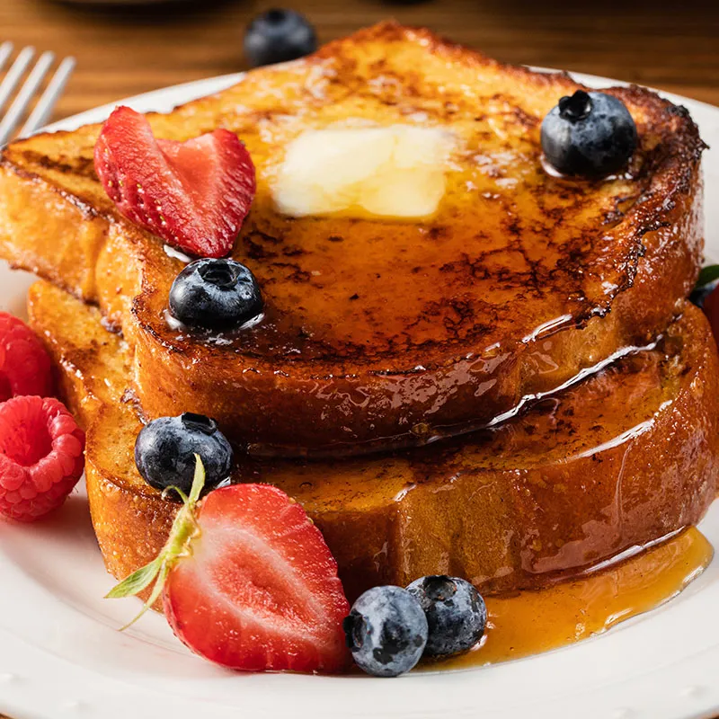

French Toast Recipe

A simple yet delicious recipe for the classic breakfast dish.
Beautifully fluffy french toast that you can serve or have all to yourself for breakfast!
Ingredients
- 1 egg
- 1 tsp. vanilla extract
- 1/2 tsp. ground cinnamon
- 1/4 cup milk
- 4 slices bread
Steps
- Beat egg, vanilla and cinnamon in shallow dish with wire whisk. Stir in milk.
- Dip bread in egg mixture, turning to coat both sides evenly.
- Cook bread slices on lightly greased nonstick griddle or skillet on medium heat until browned on both sides.
- Serve with your choice of syrup and fruits.
- Enjoy!